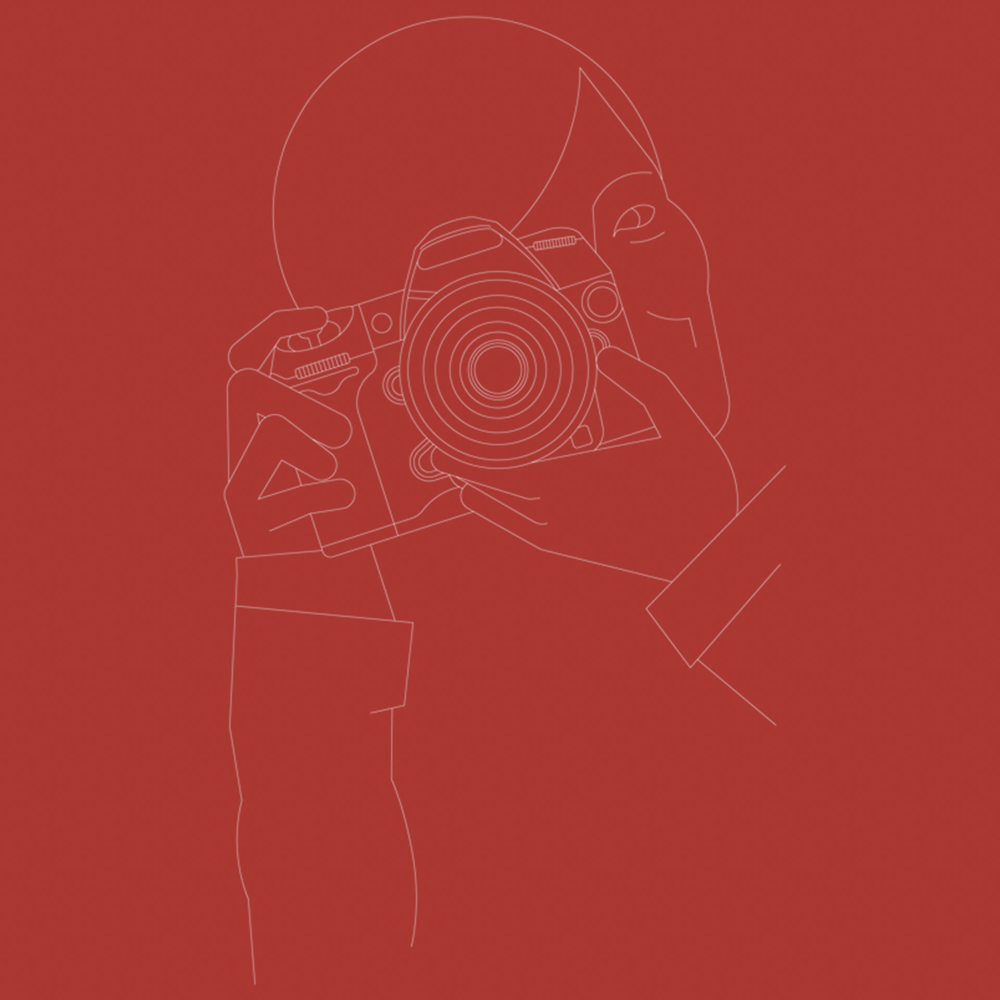

Je suis Sybil Rondeau,
Web Developer & Designer
Je réalise un site internet unique, à votre image, pour vous connecter à votre audience idéale. La solution la plus simple est WordPress, mais pour une liberté totale de design, l'idéal est un site sur-mesure entièrement codé à la main. Un site, c'est du code mais aussi du contenu, du graphisme et des médias ! Je collabore avec une équipe de freelances pour répondre à tous les besoins.
